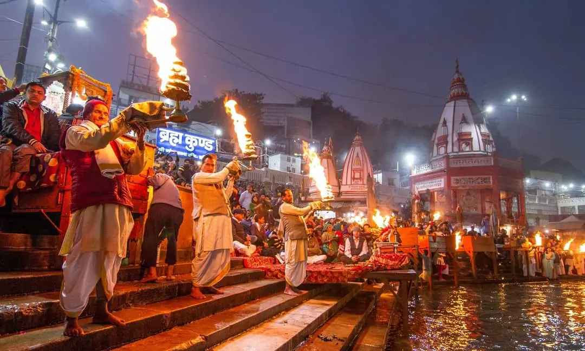
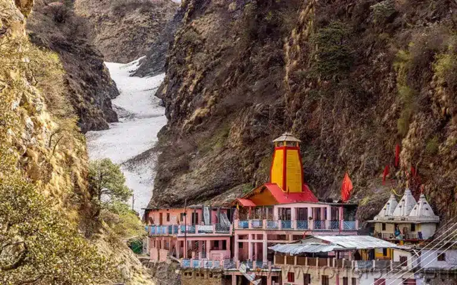
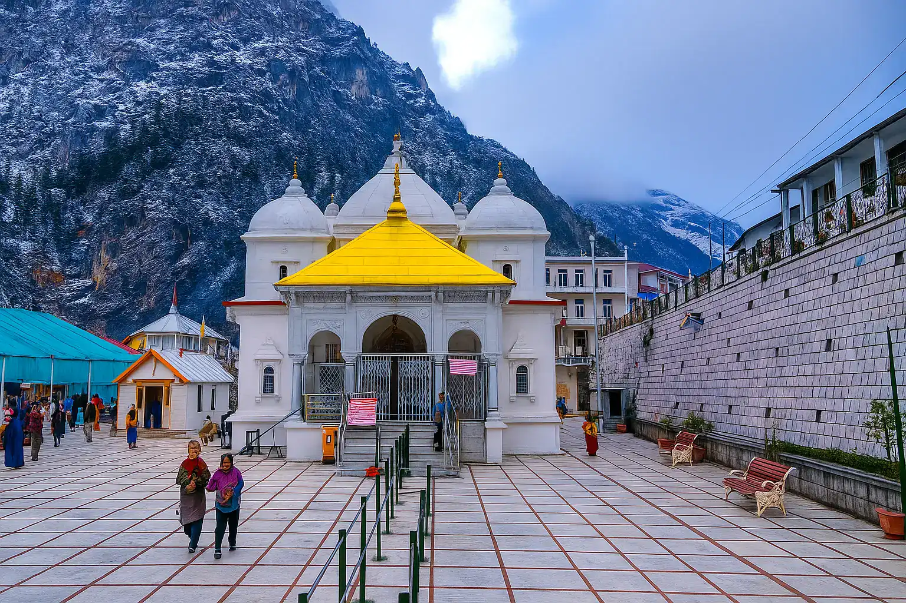
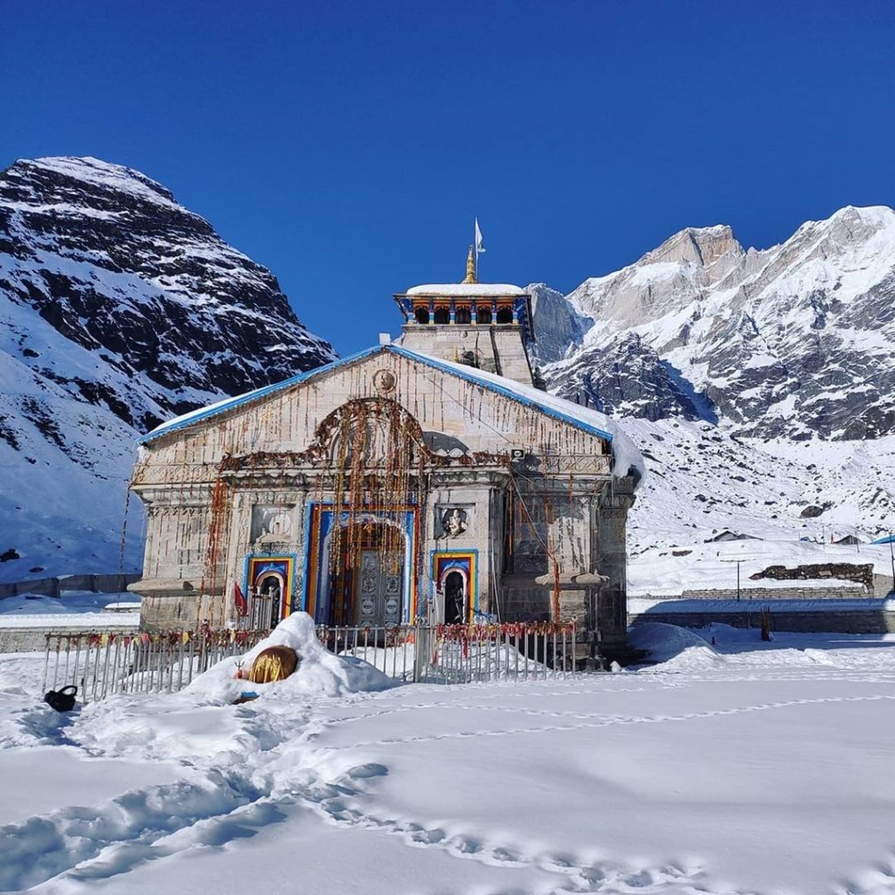
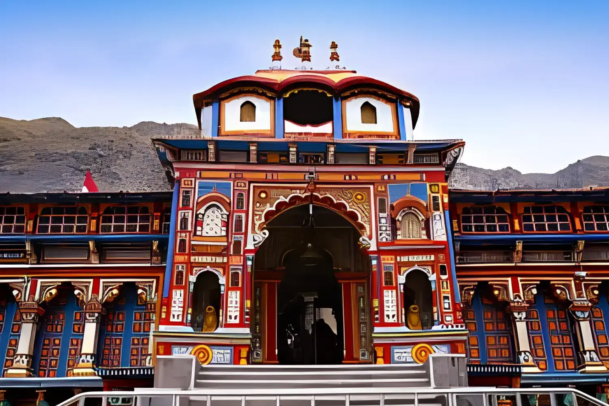

Char Dham Yatra in Uttarakhand is one of the most sacred pilgrimages in India. The journey includes four holy temples located in the Himalayas – Yamunotri, Gangotri, Kedarnath and Badrinath. Every year thousands of devotees travel to seek blessings and spiritual peace.

Haridwar is known as the gateway to the Himalayas and the starting point of the sacred Char Dham Yatra. Many pilgrims begin their journey from Haridwar by taking a holy dip in the river Ganga and attending the divine Ganga Aarti at Har Ki Pauri.
It is believed that starting the pilgrimage after taking blessings of Maa Ganga brings spiritual purity and success in the journey.

Yamunotri Temple is dedicated to Goddess Yamuna and marks the origin of the Yamuna River. Pilgrims trek from Janki Chatti to reach the temple.

Gangotri Temple is the sacred origin of the holy River Ganga. According to mythology, Goddess Ganga descended here through the locks of Lord Shiva.

Kedarnath is one of the twelve Jyotirlingas of Lord Shiva and is located at an altitude of around 3584 meters in the Himalayas.

Badrinath Temple is dedicated to Lord Vishnu and is one of the most important pilgrimage sites in India.
According to Hindu mythology, after the Kurukshetra war the Pandavas sought Lord Shiva's forgiveness for the sin of killing their relatives. Lord Shiva disguised himself as a bull and fled to the Garhwal Himalayas. When the Pandavas found him near Guptkashi, Shiva disappeared underground.
Different parts of the bull appeared at five locations where the Pandavas built temples known as the Panch Kedar.
If you need guidance about Char Dham travel or Haridwar darshan feel free to ask.
Ask Your Question on WhatsApp